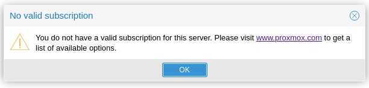
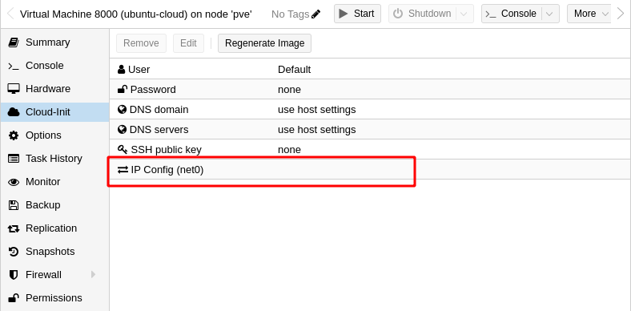
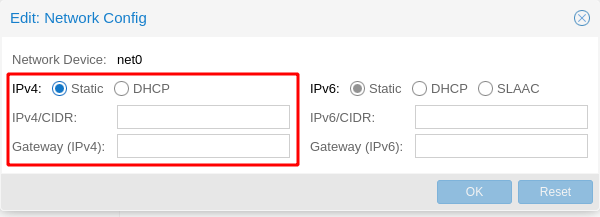

Proxmox VE
Introduction
Proxmox Virtual Environment (Proxmox VE from now on) is a complete, opensouce server management platform for enterprise virtualization. It tightly integrates the KVM hypervisor and Linux Containers (LXC), software-defined storage and networking functionality, on a single platform. With the integrated web-based user interface you can manage VMs and containers, high availability for clusters, or the integrated disaster recovery tools with ease.
Installation process
Download ISO
Latest available ISOs: Link
Installation steps
Latest documentation: Link
Just follow the steps defined in the Installing Proxmox VE section. Remember to keep the root password in a safe place.
Configuration
Once the installation has finished and the machine is restarted, access the Proxmox web interface in the following URL:
https://proxmox.ip.address:8006Credentials are root and the password provided during installation.
 The above message can be ignored as it is related to Enterprise subscriptions that include Proxmox support. All Proxmox VE features are available without any subscription.
You can remove it by following the steps described in this link, or just executing the following bash command from the node terminal:
Creating VMs using a template and Cloud-Init
What is Cloud-Init?
Cloud-Init is a feature that allows zero-touch OS installations in VM. Cloud-Init allows to define an initial username and password as well as use SSH keys for external logging. It also allows the user to define Network configurations and other things.
This is very useful as an auto-provisioning tool!
Installation instructions
Follow this guide and its corresponding video:
Notes on configuring Cloud-Init

By default, Cloud-Init leaves the config of the Network as static and empty, so you must configure it or else there won’t be any network ready:

This VM shall act as a template for other Ubuntu Cloud VMs, and if it is started, then it will be bootstrapped and assigned to an ID that will pass along any VM created from this one.
For this, you can use the WebUI and right-click on the VM template, or you can use pvesh commands to do it from the terminal. Read this article for more info:
You can also use the qm clone command, but make sure to configure unique hardware configs for each one, such as network parameters: